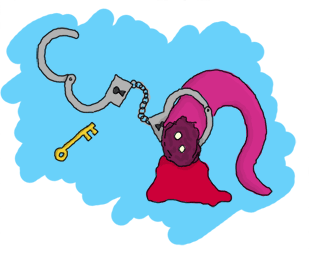

Release is the Word
Am I an Executable Yet?
How far have we got. All this work, all these concepts, and we haven't shipped a single Erlang executable yet. You might agree with me that getting an Erlang system up and running requires a lot of effort, especially compared to many languages where you call the compiler and off you go.

Of course this is entirely right. We can compile files, run applications, check for some dependencies, handle crashes and whatnot, but it's not very useful without a functioning Erlang system you can easily deploy or ship with it. What use is it to have great pizza when it can only be delivered cold? (people who enjoy cold pizza might feel excluded here. I am sorry.)
The OTP team didn't leave us on our own when it comes to making sure real systems come to life. OTP releases are part of a system made to help package applications with the minimal resources and dependencies.
Fixing The Leaky Pipes
For our first release, we will reuse our ppool and erlcount applications from last chapters. However, before we do so, we'll need to change a few things here and there. If you're following along with the book and writing your own code, you might want to copy both of our apps into a new directory called release/, which I will assume you will have done for the rest of the chapter.
The first thing that's really bothering me with erlcount is that once it's done running, the VM stays up, doing nothing. We might want most applications to stay running forever, but this time it's not the case. Keeping it running made sense because we might have wanted to play with a few things in the shell and needed to manually start applications, but this should no longer be necessary.
For this reason, we'll add a command that will shut the BEAM virtual machine down in an orderly manner. The best place to do it is within erlcount_dispatch.erl's own terminate function, given it's called after we obtain the results. The perfect function to tear everything down is init:stop/0. This function is quite complex, but will take care of terminating our applications in order, will get rid of file descriptors, sockets, etc. for us. The new stop function should now look like this:
terminate(_Reason, _State, _Data) ->
init:stop().
And that's it for the code itself. We've got a bit more work to do, still. When we defined our app files during the two last chapters, we did so while using the absolute minimal amount of information necessary to get them running. A few more fields are required so that Erlang isn't completely mad at us.
First of all, the Erlang tools to build releases require us to be a little bit more precise in our application descriptions. You see, although tools for releases don't understand documentation, they still have this intuitive fear of code where the developers were too impolite to at least leave an idea of what the application does. For this reason, we'll need to add a description tuple to both our ppool.app and erlcount.app files.
For ppool, add the following one:
{description, "Run and enqueue different concurrent tasks"}
and for erlcount:
{description, "Run regular expressions on Erlang source files"}
Now we'll be able to get a better idea of what's going on when we inspect our different systems.
The most attentive readers will also remember I've mentioned at some point that all applications depend on stdlib and kernel. However, our two app files do not mention any of these. Let's add both applications to each of our app files. This will require to add the following tuple to the ppool app file:
{applications, [stdlib, kernel]}
And add the two applications to the existing erlcount app file, giving us {applications, [stdlib, kernel, ppool]}.
Don't Drink Too Much Kool-Aid:
While this might have virtually no impact when we start releases manually (and even when we generate them with systools, which we'll see very soon), it is absolutely vital to add both libraries to the list.
People who generate releases with reltool (another tool we'll see in this chapter) will definitely need these applications in order for their release to run well, and even to be able to shut the VM down in a respectable manner. I'm not kidding, it's this necessary. I forgot to do it when writing this chapter and lost a night of work trying to find what the hell was wrong when it was just me not doing things right in the first place.
It could be argued that ideally, the release systems of Erlang could implicitly add these applications given pretty much all of them (except very special cases) will depend on them. Alas, they don't. We'll have to make do with this.
We've got a termination in place and we have updated the app files and whatnot. The last step before we start working with releases is to compile all your applications. Successively run your Emakefiles (with erl -make) in each directory containing one. Otherwise, Erlang's tools won't do it for you and you'll end up with a release without code to run. Ouch.
Releases With Systools
The systools application is the simplest one to build Erlang releases. It's the Easy-Bake Oven® of Erlang releases. To get your delicious releases out of the systools oven, you first need a basic recipe and list of ingredients. If I were to manually describe the ingredients of a successful minimal Erlang release for our erlcount application, It'd look a bit like this:
- Ingredients for erlcount 1.0.0
-
- An Erlang Run Time System (ERTS) of your choice.
- A standard library
- A kernel library
- The ppool application, which should not fail
- The erlcount application.
Did I mention that I'm a terrible cook? I'm not sure I can even cook pancakes, but at least I know how to build an OTP release. The ingredient list for an OTP release with systools looks like this file, named erlcount-1.0.rel and placed at the top-level of the release/ directory:
{release,
{"erlcount", "1.0.0"},
{erts, "5.8.4"},
[{kernel, "2.14.4"},
{stdlib, "1.17.4"},
{ppool, "1.0.0", permanent},
{erlcount, "1.0.0", transient}]}.
This just tells you all the same content as my manual recipe, although we can specify how we want the applications to be started (temporary, transient, permanent). We can also specify versions so we can mix and match different libraries from different Erlang versions depending on our needs. To get all the version numbers in there, you can just do the following sequence of calls:
$ erl
Erlang R14B03 (erts-5.8.4) [source] [smp:2:2] [rq:2] [async-threads:0] [hipe] [kernel-poll:false]
Eshell V5.8.4 (abort with ^G)
1> application:which_applications().
[{stdlib,"ERTS CXC 138 10","1.17.4"},
{kernel,"ERTS CXC 138 10","2.14.4"}]
So for that one, I was running R14B03. You can see the ERTS version in there right after the release number (the version is 5.8.4). Then by calling application:which_applications() on a running system, I can see the two versions I need from kernel (2.14.4) and stdlib (1.17.4). The numbers will vary from Erlang version to version. However, being explicit about the versions you need is helpful because it means that if you have many different Erlang installs, you might still only want an older version of stdlib that won't badly influence whatever you were doing.

You'll also note that I chose to name the release erlcount and make it version 1.0.0. This is unrelated to the ppool and erlcount applications, which are both also running the version 1.0.0, as specified in their app file.
So now we have all our applications compiled, our list of ingredients and the wonderful concept of a metaphorical Easy-Bake Oven®. What we need is the actual recipe.
There are a few concepts that will enter the stage right about now. A recipe will tell you a few things: in what order to add ingredients, how to mix them, how to cook them, etc. The part about the order used to add them is covered by our list of dependencies in each app file. The systools application will be clever enough to look at the app files and figure out what needs to run before what.
Erlang's virtual machine can start itself with a basic configuration taken from something called a boot file. In fact, when you start your own erl application from the shell, it implicitly calls the Erlang Run Time System with a default boot file. That boot file will give basic instructions such as 'load the standard library', 'load the kernel application', 'run a given function' and so on. That boot file is a binary file created from something called a boot script, which contains tuples that will represent these instructions. We'll see how to write such a boot script.
First we start with:
{script, {Name, Vsn},
[
{progress, loading},
{preLoaded, [Mod1, Mod2, ...]},
{path, [Dir1,"$ROOT/Dir",...]}.
{primLoad, [Mod1, Mod2, ...]},
...
Just kidding. Nobody really takes the time to do that and we won't either. The boot script is something easy to generate from the .rel file. Just start an Erlang VM from the release/ directory and call the following line:
$ erl -env ERL_LIBS .
...
1> systools:make_script("erlcount-1.0", [local]).
ok
Now if you look in your directory, you will have a bunch of new files, including erlcount-1.0.script and erlcount-1.0.boot files. Here, the local option means that we want the release to be possible to run from anywhere, and not just the current install. There are a bunch more options to be seen, but because systools isn't as powerful as reltool (in the next sections), we won't look into them with too much depth.
In any case, we have the boot script, but not enough to distribute our code yet. Get back to your Erlang shell and run the following command:
2> systools:make_tar("erlcount-1.0", [{erts, "/usr/local/lib/erlang/"}]).
ok
Or, on Windows 7:
2> systools:make_tar("erlcount-1.0", [{erts, "C:/Program Files (x86)/erl5.8.4"}]).
ok
Here, systools will look for your release files and the Erlang Run Time System (because of the erts option). If you omit the erts option, the release won't be self-executable and will depend on the presence of Erlang already being installed on a system.
Running the function call above will have created an archive file named erlcount-1.0.tar.gz. Unarchive the files inside and you should see a directory like this:
erts-5.8.4/ lib/ releases/
The erts-5.8.4/ directory will contain the run time system. The lib/ directory holds all the applications we need and releases has the boot files and whatnot.
Move into the directory where you extracted these files. From there, we can build a command line call for erl. First of all, we specify where to find the erl executable and the boot file (without the .boot extension). In Linux, this gives us:
$ ./erts-5.8.4/bin/erl -boot releases/1.0.0/start
The command is the same for me on Windows 7, using Windows PowerShell.
Don't Drink Too Much Kool-Aid:
There is no guarantee that a release will work on any system ever. If you're using pure Erlang code, then that code will be portable. The issue is that the ERTS you ship with it might itself not work: you will either need to create many binary packages for many different platforms for large-scale definition, or just ship the BEAM files without the associated ERTS and ask people to run them with an Erlang system they have on their own computer.
You can optionally use absolute paths if you want the command to work from anywhere on your computer. Don't run it right now, though. It's going to be useless because there is no source file to analyse in the current directory. If you used absolute paths, you can go to the directory you want to analyse and call the file from there. If you used relative paths (as I did) and if you recall our erlcount application, we made it possible to configure what directory the code will be scanning. Let's add -erlcount directory "'<path to the directory>'" to the command. Then because we want this not to look like Erlang, let's add the -noshell argument. This gives me something like this on my own computer:
$ ./erts-5.8.4/bin/erl -boot releases/1.0.0/start -erlcount directory '"/home/ferd/code/otp_src_R14B03/"' -noshell Regex if\s.+-> has 3846 results Regex case\s.+\sof has 55894 results
Using absolute file paths, I get something like this:
$ /home/ferd/code/learn-you-some-erlang/release/rel/erts-5.8.4/bin/erl -boot /home/ferd/code/learn-you-some-erlang/release/rel/releases/1.0.0/start -noshell
Wherever I run it from, that's the directory that's going to be scanned. Wrap this up in a shell script or a batch file and you should be good to go.
Releases With Reltool
There are a bunch of annoying things with systools. We have very little control about how things are done, and frankly, running things as they are there is a bit annoying. Manually specifying the the path to the boot file and whatnot is kind of painful. Moreover, the files are a bit large. The whole release takes over 20mb on disk, and it would be a lot worse if we were to package more applications. It is possible to do better with reltool as we get a lot more power, although the tradeoff is increased complexity.
Reltool works from a config file that looks like this:
{sys, [
{lib_dirs, ["/home/ferd/code/learn-you-some-erlang/release/"]},
{rel, "erlcount", "1.0.0",
[kernel,
stdlib,
{ppool, permanent},
{erlcount, transient}
]},
{boot_rel, "erlcount"},
{relocatable, true},
{profile, standalone},
{app, ppool, [{vsn, "1.0.0"},
{app_file, all},
{debug_info, keep}]},
{app, erlcount, [{vsn, "1.0.0"},
{incl_cond, include},
{app_file, strip},
{debug_info, strip}]}
]}.
Behold the user friendliness of Erlang! To be quite honest, there's no easy way to introduce ourselves to Reltool. You need a bunch of these options at once or nothing will work. It might sound confusing, but there's a logic behind it.
First of all, Reltool will take different levels of information. The first level will contain release-wide information. The second level will be application-specific, before allowing fine-grained control at a module-specific level:
For each of these levels, as in the previous graph, different options will be available. Rather than taking the encyclopedic approach with all the options possible, we'll rather visit a few essential options and then a few possible configurations depending on what you might be looking for in your app.
The first option is one that helps us get rid of the somewhat annoying need to be sitting in a given directory or to set the correct -env arguments to the VM. The option is lib_dirs and it takes a list of directories where applications are sitting. So really, instead of adding -env ERL_LIBS <list of directories>, you put in {lib_dirs, [ListOfDirectories]} and you get the same result.
Another vital option for the Reltool configuration files is rel. This tuple is very similar to the .rel file we had written for systools. In the demo file above, we had:
{rel, "erlcount", "1.0.0",
[kernel,
stdlib,
{ppool, permanent},
{erlcount, transient}
]},
And that's what we'll need to tell us what apps need to be started correctly. After that tuple, we want to add a tuple of the form:
{boot_rel, "erlcount"}
This will tell Reltool that whenever someone runs the erl binary included in the release, we want the apps from the erlcount release to be started. With just these 3 options (lib_dirs, rel and boot_rel), we can get a valid release.
To do so, we'll put these tuples into a format Reltool can parse:
{sys, [
{lib_dirs, ["/home/ferd/code/learn-you-some-erlang/release/"]},
{rel, "erlcount", "1.0.0",
[kernel,
stdlib,
{ppool, permanent},
{erlcount, transient}
]},
{boot_rel, "erlcount"}
]}.
Yeah, we just wrap them into a {sys, [Options]} tuple. In my case, I saved this in a file named erlcount-1.0.config in the release/ directory. You might put it anywhere you want (except /dev/null, even though it's got exceptional write speeds!)
Then we'll need to open an Erlang shell:
1> {ok, Conf} = file:consult("erlcount-1.0.config").
{ok,[{sys,[{lib_dirs,["/home/ferd/code/learn-you-some-erlang/release/"]},
{rel,"erlcount","1.0.0",
[kernel,stdlib,{ppool,permanent},{erlcount,transient}]},
{boot_rel,"erlcount"}]}]}
2> {ok, Spec} = reltool:get_target_spec(Conf).
{ok,[{create_dir,"releases",
...
3> reltool:eval_target_spec(Spec, code:root_dir(), "rel").
ok
The first step here is to read the config and bind it to the Conf variable. Then we send that into reltool:get_target_spec(Conf). The function will take a while to run and return way too much information for us to proceed. We don't care and just save the result in Spec.
The third command takes the spec and tells Reltool 'I want you to take my release specification, using whatever path where my Erlang installs are, and shove it into the "rel" directory'. That's it. Look into the rel directory and you should have a bunch of subdirectories there.
For now we don't care and can just call:
$ ./bin/erl -noshell Regex if\s.+-> has 0 results Regex case\s.+\sof has 0 results
Ah, a bit simpler to run. You can put these files pretty much anywhere, as long as they keep the same file tree and run them from wherever you want.
Have you noticed something different? I hope you have. We didn't need to specify any version numbers. Reltool is a bit more clever than Systools there. If you do not specify a version, it will automatically look for the newest one possible in the paths you have (either in the directory returned by code:root_dir() or what you put in the lib_dirs tuple).
But what if I'm not hip and cool and trendy and all about the latest apps, but rather a retro lover? I'm still wearing my disco pants in here and I want to use older ERTS versions and older library versions, you see (I've never stayed more alive than I was in 1977!)
Thankfully, Reltool can handle releases that need to work with older versions of Erlang. Respecting your elders is an important concept for Erlang tools.
If you have older versions of Erlang installed, you can add an {erts, [{vsn, Version}]} entry to the config file:
{sys, [
{lib_dirs, ["/home/ferd/code/learn-you-some-erlang/release/"]},
{erts, [{vsn, "5.8.3"}]},
{rel, "erlcount", "1.0.0",
[kernel,
stdlib,
{ppool, permanent},
{erlcount, transient}
]},
{boot_rel, "erlcount"}
]}.
Now, you want to clear out the rel/ directory to get rid of the newer release. Then you run the rather ugly sequence of calls again:
4> f(),
4> {ok, Conf} = file:consult("erlcount-1.0.config"),
4> {ok, Spec} = reltool:get_target_spec(Conf),
4> reltool:eval_target_spec(Spec, code:root_dir(), "rel").
ok
A quick reminder here, f() is used to unbind the variables in the shell. Now if I go to the rel directory and call $ ./bin/erl, I get the following output:
Erlang R14B02 (erts-5.8.3) [source] ... Eshell V5.8.3 (abort with ^G) 1> Regex if\s.+-> has 0 results Regex case\s.+\sof has 0 results
Awesome. This runs on version 5.8.3 even though I've got newer ones available. Ah, ha, ha, ha, Stayin' alive.
Note: if you look at the rel/ directory, you'll see things are kind of similar to what they were with Systools, but one of the difference will be in the lib/ directory. That one will now contain a bunch of directories and .ez files. The directories will contain the include/ files required when you want to do development and the priv/ directories when there are files that need to be kept there. The .ez files are just zipped beam files. The Erlang VM will unpack them for you come runtime, it's just to make things lighter.
But wait, what about my other modules?
Ah now we move away from the release-wide settings and have to enter the settings that have to do with applications. There are still a lot of release-wide options to see, but we're on such a roll that we can't be asked to stop right now. We'll revisit them in a while. For applications, we can specify versions by adding more tuples:
{app, AppName, [{vsn, Version}]}
And put in one per app that needs it.
Now we have way more options for everything. We can specify if we want the release to include debug info, strip it away, try to make more compact app files or trust us with our definitions, stuff to include or exclude, how strict to be when it comes to including applications and modules on which your own applications might depend, etc. Moreover, these options can usually be defined both release-wide and application-wide so you can specify defaults and then values to override.
Here's a quick rundown. If you find it complex, just skip over it and you'll see a few cookbook recipes to follow:
Release-only options
- {lib_dirs, [ListOfDirs]}
- What directories to look inside for libraries.
- {excl_lib, otp_root}
- Added in R15B02, this option lets you specify OTP applications as part of your release, without including whatever comes from the standard Erlang/OTP path in the final release. This lets you create releases that are essentially libraries bootable from an existing virtual machine installed in a given system. When using this option you must now start the virtual machine as
$ erl -boot_var RELTOOL_EXT_LIB <path to release directory>/lib -boot <path to the boot file>. This will allow the release to use the current Erlang/OTP install, but with your own libraries for your custom release. - {app, AppName, [AppOptions]}
- Will let you specify application-wide options, usually more specific than the release-wide options.
- {boot_rel, ReleaseName}
- Default release to boot with the
erlexecutable. This means we won't need to specify the boot file when callingerl. - {rel, Name, Vsn, [Apps]}
- The applications to be included in the release.
- {relocatable, true | false}
- It is possible to run the release from everywhere or only from a hard coded path in your system. By default it's set to
trueand I tend to leave it that way unless there is a good reason to do otherwise. You'll know when you need it. - {profile, development | embedded | standalone}
- This option will act as a way to specify default
*_filters(described below) based on your type of release. By default,developmentis used. That one will include more files from each app and ERTS blindly. Thestandaloneprofile will be more restrictive, and theembeddedprofile even more so, dropping more default ERTS applications and binaries.
Release and Application-wide Options
Note that for all of these, setting the option on the level of an application will simply override the value you gave at a system level.
- {incl_sys_filters, [RegularExpressions]}
{excl_sys_filters, [RegularExpressions]} - Checks whether a file matches the include filters without matching the exclude filters before including it. You might drop or include specific files that way.
- {incl_app_filters, [RegularExpressions]}
{excl_app_filters, [RegularExpressions]} - Similar to
incl_sys_filtersandexcl_sys_filters, but for application-specific files - {incl_archive_filters, [RegularExpressions]}
{excl_archive_filters, [RegularExpressions]} - Specified what top-level directories have to be included or excluded into
.ezarchive files (more on this soon). - {incl_cond, include | exclude | derived}
- Decides how to include applications not necessarily specified in the
reltuple. Pickingincludemeans that Reltool will include pretty much everything it can find. Pickingderivedmeans that Reltool will only include applications that it detects can be used by any of the applications in yourreltuple. This is the default value. Pickingexcludewill mean that you will include no apps at all by default. You usually set this on a release-level when you want minimal includes, and then override it on an application-by-application basis for the stuff you feel like adding. - {mod_cond, all | app | ebin | derived | none}
- This controls the module inclusion policy. Picking
nonemeans no modules will be kept. That's not very useful. Thederivedoption means that Reltool will try to figure out what modules are used by other modules which are already included and add them in that case. Setting the option toappwill mean that Reltool keeps all the modules mentioned in the app file and those that were derived. Setting it toebinwill keep those in theebin/directory and the derived ones. Using the optionallwill be a mix of usingebinandapp. That's the default value. - {app_file, keep | strip | all}
- This option manages how the app files are going to be managed for you when you include an application. Picking
keepwill guarantee that the app file used in the release is the same one you wrote for your application. That's the default option. If you choosestrip, Reltool will try to generate a new app file that removes the modules you don't want in there (those that were excluded by filters and other options). Choosingallwill keep the original file, but will also add specifically included modules in there. The nice thing withallis that it can generate app files for you if none are available.
Module-specific Options
- {incl_cond, include | exclude | derived}
- This lets you override the
mod_condoption defined at the release level and application level.
All-levels Options
These options work on all levels. The lower the level, the more precedence it takes.
- {debug_info, keep | strip}
- Assuming your files were compiled with
debug_infoon (which I suggest you do), this option lets you decide whether to keep it or drop it. Thedebug_infois useful when you want to decompile files, debug them, etc. but will take some space.
THAT'S DENSE
Oh yes it is a lot of information. I didn't even cover all the possible options, but that's still a decent reference. If you want the whole thing, check out the official doc.
Recipes
For now we'll have a few general tips and tricks of things to do depending on what you want to obtain.
Development versions
Getting something for development has to be relatively easy. Often the defaults are good enough. Stick to getting the basic items we'd seen before in place and it should be enough:
{sys, [
{lib_dirs, ["/home/ferd/code/learn-you-some-erlang/release/"]},
{rel, "erlcount", "1.0.0", [kernel, stdlib, ppool, erlcount]},
{boot_rel, "erlcount"}
]}.
Reltool will take care about importing enough to be fine. In some cases, you might want to have everything from a regular VM. You might be distributing an entire VM for a team, with some libraries included. In that case, what you want to do is something more like this:
{sys, [
{lib_dirs, ["/home/ferd/code/learn-you-some-erlang/release/"]},
{rel, "start_clean", "1.0.0", [kernel, stdlib]},
{incl_cond, include},
{debug_info, keep}
]}.
By setting incl_cond to include, all applications found in the current ERTS install and the lib_dirs will be part of your release.
Note: when no boot_rel is specified, you have to have a release named start_clean for reltool to be happy. That one will be picked by default when you start the associated erl file.
If we want to exclude a specific application, let's say megaco because I never looked into it, we can instead get a file like this:
{sys, [
{lib_dirs, ["/home/ferd/code/learn-you-some-erlang/release/"]},
{rel, "start_clean", "1.0.0", [kernel, stdlib]},
{incl_cond, include},
{debug_info, keep},
{app, megaco, [{incl_cond, exclude}]}
]}.
Here we can specify one or more applications (each having its own app tuple), and each of them overrides the incl_cond setting put at the release level. So in this case, we will include everything except megaco.
Only importing or exporting part of a library
In our release, one annoying thing that happened was that apps like ppool and others, even though they didn't need them, also kept their test files in the release. You can see them by going into rel/lib/ and unzipping ppool-1.0.0.ez (you might need to change the extension first).
To get rid of these files, the easiest way to do it is specify exclusion filters such as:
{sys, [
{lib_dirs, ["/home/ferd/code/learn-you-some-erlang/release/"]},
{rel, "start_clean", "1.0.0", [kernel, stdlib, ppool, erlcount]},
{excl_app_filters, ["_tests.beam$"]}
]}.
When you want to only import specific files of an application, let's say our erlcount_lib for its functionality, but nothing else from there, things get a bit more complex:
{sys, [
{lib_dirs, ["/home/ferd/code/learn-you-some-erlang/release/"]},
{rel, "start_clean", "1.0.0", [kernel, stdlib]},
{incl_cond, derived}, % exclude would also work, but not include
{app, erlcount, [{incl_app_filters, ["^ebin/erlcount_lib.beam$"]},
{incl_cond, include}]}
]}.
In this case, we switched from {incl_cond, include} to more restrictive incl_conds. This is because if you go large and rake everything is, then the only way to include a single lib is to exclude all the others with an excl_app_filters. However, when our selection is more restrictive (in this case we're derived and wouldn't include erlcount because it's not part of the rel tuple), we can specifically tell the release to include the erlcount app with only files that match the regular expression having to do with erlcount_lib. This prompts the question as to how to make the most restrictive application possible, right?
Smaller Apps For Programmers With Big Hearts
This is where Reltool becomes a good bit more complex, with a rather verbose configuration file:
{sys, [
{lib_dirs, ["/home/ferd/code/learn-you-some-erlang/release/"]},
{erts, [{mod_cond, derived},
{app_file, strip}]},
{rel, "erlcount", "1.0.0", [kernel, stdlib, ppool, erlcount]},
{boot_rel, "erlcount"},
{relocatable, true},
{profile, embedded},
{app_file, strip},
{debug_info, strip},
{incl_cond, exclude},
{excl_app_filters, ["_tests.beam$"]},
{app, stdlib, [{incl_cond, include}]},
{app, kernel, [{incl_cond, include}]},
{app, ppool, [{vsn, "1.0.0"}, {incl_cond, include}]},
{app, erlcount, [{vsn, "1.0.0"}, {incl_cond, include}]}
]}.
Oh, a lot more stuff going on. We can see that in the case of erts, we ask for Reltool to keep only what's necessary in there. Having mod_cond to derived and app_file to strip will ask Reltool to check and only keep what's used for something else. That's why {app_file, strip} is also used on the release level.

The profile is set to embedded. If you looked at the .ez archives in the previous cases, they contained the source files, test directories, etc. When switching over to embedded only include files, binaries and the priv/ directories are kept. I'm also removing debug_info from all files, even if they were compiled with it. This means we're going to lose some debugging ability, but it will reduce the size of files.
I'm still stripping away test files, and setting things so that no application is included until explicitly told to be ({incl_cond, exclude}). Then, I override this setting in each app I do want to include. If something's missing, Reltool will warn you, so you can try to move things around and play with settings until you get the results you want. It might involve having some application settings with {mod_cond, derived} so that the minimal files of some applications are what is kept.
What's the difference in the end? Some of our more general releases would weigh in at over 35MB. The one described above is reduced to less than 20MB. We're shaving a good part of it. The size is still fairly large though. That's because of ERTS, which itself takes 18.5MB. If you want to, you can dig deeper and really micro manage how ERTS is built to get something smaller. You can alternatively pick some binary files in the ERTS that you know won't be used by your application: executables for scripts, remote running of Erlang, binaries from test frameworks, different running commands (Erlang with or without SMP, etc.)
The lightest release will be the one that assumes that the other user has Erlang installed already—when you pick this option, you need to add the rel/ directory's content as part of your ERL_LIBS environment variable and call the boot file yourself (a bit like with systools), but it'll work. Programmers might want to wrap this up in scripts to get things going.
Note: these days, Erlang programmers seem to really love the idea of having all these releases handled for you by a tool called rebar. Rebar will act as a wrapper over Emakefiles and Reltool. There is no loss in understanding how Reltool works—Rebar uses config files that are nearly the same and the gap between the two tools isn't that big.
Released From Releases
Well, that's it for the two major ways to handle releases. It's a complex topic, but a standard way to handle things. Applications might be enough for many readers and there's nothing bad in sticking to them for a good while, but now and then releases might be useful if you want your Operations and Maintenance guy to like you a bit better given you know (or at least have some idea on) how to deploy Erlang applications when you need to.
Of course, what could make your Operations guy happier than no down time? The next challenge will be to do software upgrades while a release is running.